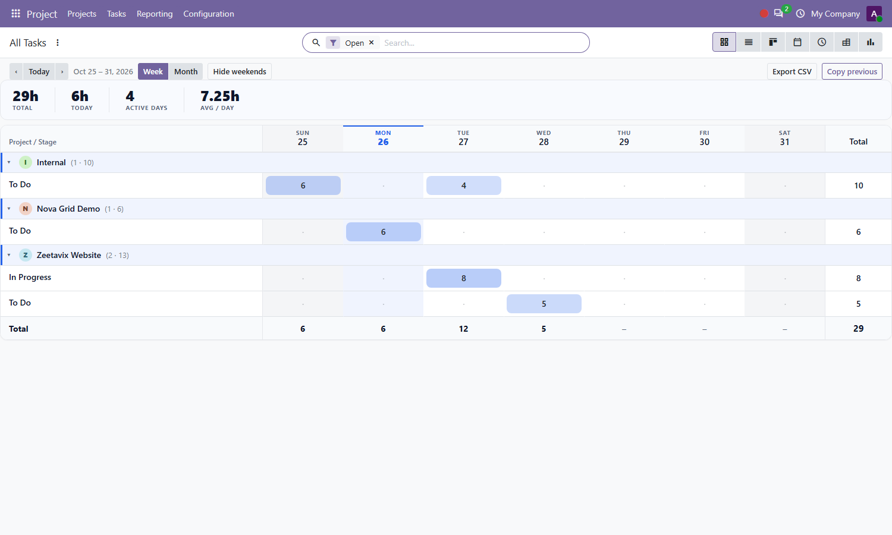
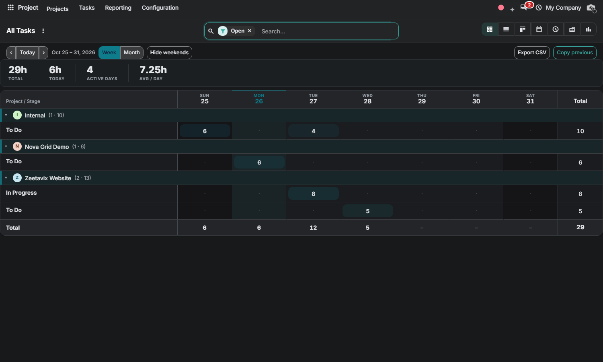

Free Odoo 20.0 Community • By Zeetavix
Nova Project Workload Grid answers "who is loaded, when" without Enterprise planning — rebuilt from scratch: sections are projects, rows are stages, columns are deadline weeks, and the measure is allocated hours. Plan inline, watch the load pile up in the heatmap, and keep every deadline honest.
Click any cell and type planned hours — the grid spreads them across the tasks in that deadline bucket, creates placeholder tasks for empty buckets, and guards every bucket at 24 hours. Tasks without a deadline stay out of the grid: set a deadline to plan them.

The grid follows your backend theme: elevated header/footer bands, dimmed weekends, damped heat pills and a theme-aware accent.

Nova Grid (bundled engine, auto-installed dependency) • project
By Zeetavix — https://zeetavix.com
Version: 20.0.1.0.0
License: LGPL-3 (free and open source)
Price: Free
Dependencies: nova_grid, project
Built for: Odoo 20 Community — no
Enterprise code used or required.
Install: drop the nova_project_workload_grid
folder in your addons path, update the apps list,
install. Installing this module pulls in the nova_grid engine automatically.
Support: support@zeetavix.com